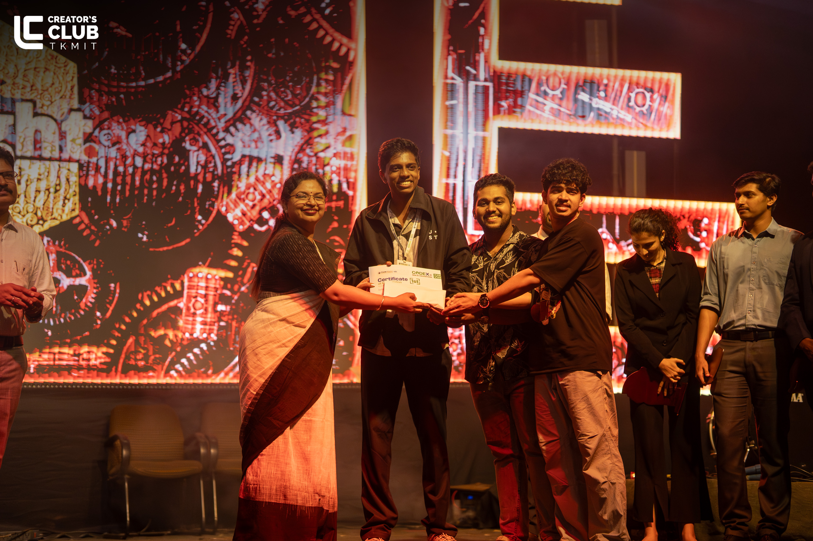
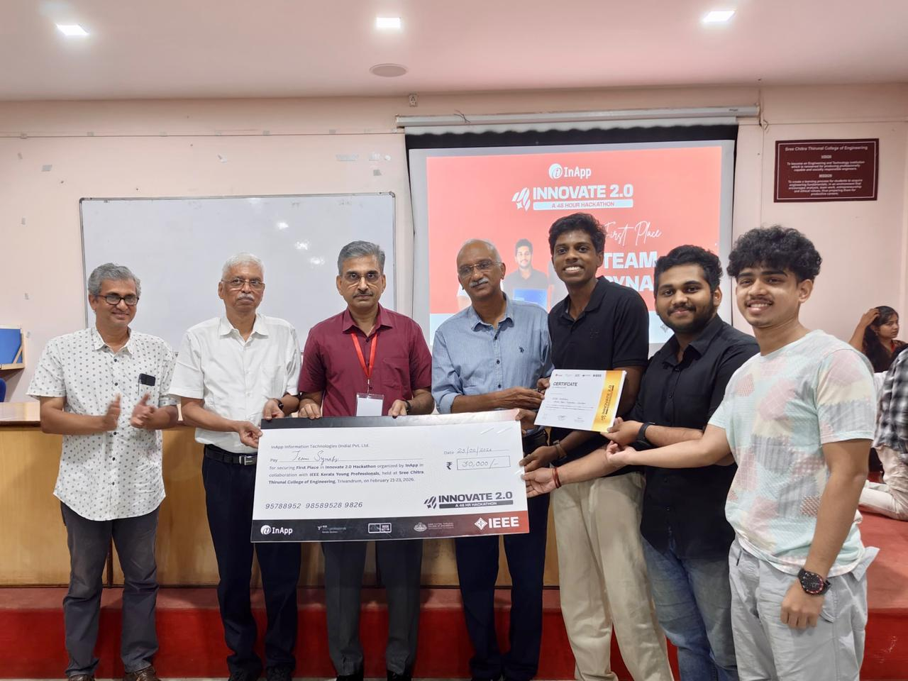

Hackathonss......what are they..this was me when i joined college in 2024.Time passed by and i saw many people doing these so called hackthons ,winning and earning recognition and cash prizes.Emphasise on the Cash Prize , as a college student would look for earning money as a side to fulfil their wishes.And So Was I.The Story begins in the start of my 2nd year in college. Me and my friend ,in class ,sitting and dreaming ,suddenly ,coincidence or so we both had a thought like somehow we should do something outside college.And the first idea was A HACKATHON.So we found a hackthon and registered for it,the two of us.
## Hackthon no : 1
Hackefx 2.0 (Kochi) [JAN 9-10] .This was the hackthon that we registered . The theme was about automotive coding and we chose the problem statement as building a Gesture Controlled Infotainment System.To be honest , for a newbie in Hackthons the project that we both built we extraordinary.We built a infotainment system that we can control with out hand gestures.
Though there were flaws in out project like the time for booting up the project,latency,and such issues like the project being heavy.Unfortunately we messed up the presentation round as we didnt know there would be one in between.(Newbie issues).Overall it was a good experience and it gave us such a learning and a drive that benifitted us in the future hackthons. (IYKYK)
## Hackthon no : 2
### The one that started our streak
CODEX'26 (Kollam) [JAN 28-29] .The drive we got from the previous hackthon landed us here .Our team expanded by one more member and we were 3 now. We arrived at the College that was conducting the hackhton and did the orientation and stuff and then the time came to pick our problem statements.If im not wrong there were 4 ps and we choses the one with more technical terms in it which we knew no one would try to take or even try to understand the ps.There began our 24 hrs. We sat planned and did out project.The discussions between us were proper and effective for the projects developement and the presentatios that we did were on point.
We actually made a project with agentic ai frameworks whih made the supply chain between markets and warehouses more efficient.And at last as a end devvice we implemented it as a kiosk,which i think was the key factor. Then came the final presentations and we were the last to present.We did our presentations hoping for the best.After all the presentations we were waiting for the results. Suddenly i got a message from one of the organiser that to come near the side of the stage.From that moment my adrenaline began to rush.The award ceremony came.Prizes of third, second were called.We were standing tensed there watching all these.And the moment came ,The FIRST PLACE -TEAM SYNAPZ. We were blown away.We coulndt beleive it .It was our second hackthon. And we just won that and got a cash prize of 50k.We were over the moon.
We got many appreciations and we were one of the stars of our class.We were more enthusiastic to attending more and winning.From where our next hackthon comes.

## Hackthon no : 3
SCTCE (Trivandrum) [FEB 2026]. After winning the previous hackthon we were obviously excited and motivated. Winning once changes something in your head. You start believing maybe you can actually build things and compete. So naturally we registered for the next one and reached there expecting another fun build session. But this one started very differently. When the problem statements were released there were a lot of them and for the first time we were genuinely confused. We kept reading one after another and every few minutes someone changed their mind. One looked easy but not exciting, another looked exciting but impossible to complete. We sat discussing for a long time and honestly started feeling like we were wasting valuable building time. Eventually we did what we always somehow end up doing — choose the one that sounded difficult enough that most people probably wouldn’t even attempt it.
That became our project — CIVIA — Civic Intelligent Virtual AI Assistant. The idea was ambitious. We wanted to build an automated civic and legal assistance kiosk that could act as an alternative to Akshaya centres and CSC centres across rural India. Something where people could walk up, request a service like an Aadhaar update or government application, interact with the kiosk, have forms automatically filled, process everything and either scan a QR to receive outputs directly on their phone or simply take a print. Underneath it we built using concepts around LangChain, RAG pipelines, Chroma VectorDB and Python while trying to make the entire thing work as an edge device on lower-end hardware. The idea sounded cool while discussing but once building started reality hit. This wasn’t 24 hours like before. This was 48 hours. And trust me after hour 30 everything feels different. Sleep disappears, time stops making sense and every feature suddenly becomes ten times harder to implement. There were moments where we genuinely thought we had chosen something too big. Too many components, too many moving pieces and too much uncertainty. But somehow we kept pushing. One thing that helped massively was the mentors we got there. They were genuinely amazing and helped guide us whenever we got stuck or overcomplicated things.
Day 1 and Day 2 presentations honestly felt okay-ish and average. Nothing extraordinary. Since our idea itself felt huge, I don’t think many people expected us to actually complete it.
Then came the second-last presentation. Out of around 60 teams only 5 would move to the finals. We gave that presentation using everything we had improved from mentor feedback and our own discussions but after stepping down we honestly didn’t feel great about it. It wasn’t as smooth as we imagined and we thought maybe this was where the run ended. We were already preparing ourselves mentally for a good attempt and moving on. Then results came and somehow against all expectations — TEAM SYNAPZ got into the Top 5. That moment completely changed the energy. Suddenly all the tiredness disappeared. It felt like we had brought back a match that was almost gone. We were overjoyed because getting to finals itself felt impossible considering how heavy the project had become. Now we were pumped. We genuinely started thinking maybe Top 3 is possible. We prepared harder for the final presentation, refined explanations, improved demos and gave everything we had left. During presentations we also saw some insane projects and honestly thought okay these teams definitely have something strong. Deep down we still hoped maybe third place if things go our way. Prize ceremony started. Third place was announced — not us. Second place — still not us. At that point we were already mentally accepting defeat and laughing because okay maybe not this time. Then suddenly came the announcement — FIRST PLACE GOES TO TEAM SYNAPZ. That moment was unreal. Forty-eight hours of almost giving up, choosing something too ambitious, presentations that felt average and somehow still pulling everything back. We won again. Second hackthon victory. Back to back. Two in a row. Special thanks to my teammates because this one especially wasn’t possible alone. Every random discussion, every failed attempt, every late-night fix and every push when someone wanted to give up led to that moment. At that point we thought maybe the streak ends here and life goes back to normal — assignments, classes, labs and sleep. But then… another registration form appeared in the group chat. Someone sent a message. Just two words — One more? To be continued…

## Hackathon no : 4: The Homeground Statement
Epochon 2.0 (Amrita Puri) [MARCH 2026]. Two back-to-back first-place wins change how people look at you. Suddenly, you aren't just students attending an event; you have a target on your back. Walk around campus, and you start hearing the whispers that you just got lucky or that those first two wins were probably just a fluke. When the ACM Student Club at our own college announced Epochon 2.0, we knew we couldn't sit it out. This wasn't just about winning money anymore. The prize pool was smaller, but this one felt deeply personal. This was our homeground, and we had to prove that Team Synapz was the real deal.
The hackathon was structured differently, starting with an intense workshop the day before the build that laid down the ground rules for the theme of Agentic AI. The actual hackathon itself was a brutal, fast-paced 12-hour sprint. When the clock started ticking, we chose a problem statement in the Agentic AI domain and decided to tackle something massive called NyayaSetu. The goal of NyayaSetu was to bridge the gap between complex constitutional law and ordinary citizens who have zero legal knowledge. Instead of just building a single chatbot wrapped around a basic language model, we scaled up the architecture using a Multi-Agent Swarm Model. We set up a network of independent AI agents that could actually talk to each other to solve a user's problem. This included a Legal Intake Agent to convert the user's casual, everyday language into formal legal issues, a Case Law Analyst to query local data vector pipelines for matching legal precedents, and a Document Drafter to generate standard, structured legal forms based on the context. We bypassed the standard web app layout and compiled the entire swarm to run directly as a localized, offline-capable Edge Kiosk. It was a fully functional, self-contained terminal where someone could walk up, speak their issue, and watch the agents work behind the scenes to output a drafted legal solution.
By absolute coincidence, we were the very last team called up to present out of more than fifty competing groups. Standing there on our own campus, in front of our own peers, seniors, and professors who had been watching other teams present for hours, put a completely different kind of weight on our shoulders. When our turn finally came, we plugged in the edge kiosk, booted up the live multi-agent swarm, and ran the full NyayaSetu demo flawlessly in front of the panel.And Guess what! ,They were impressed.At that time ,in contrast to our previous hackthons we felt a sense of relief. We thought we were onto something.And few dats later results came and we were 2nd.(Team Synapz).We were satisfied as the last minute struggle to set everything up was very hectic and we overcame it. Once again got a cah prize of 1k rupees and got more appreciations as well.....